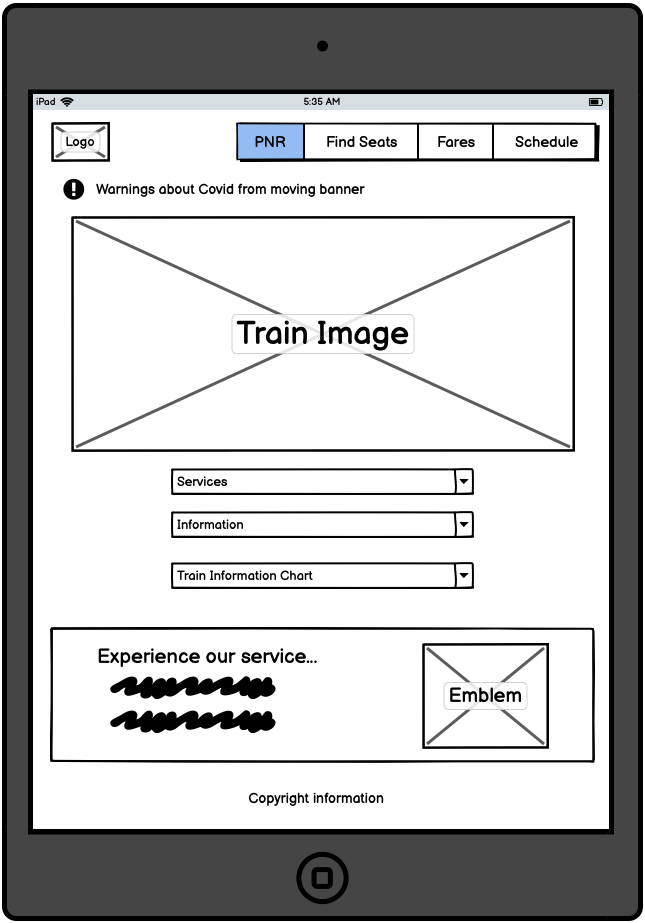
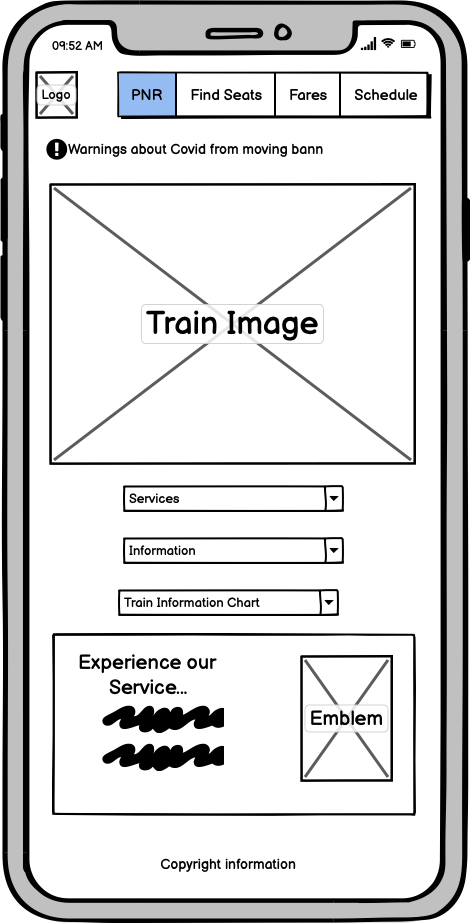

Responsive Redesign
I redesigned a website I often visit: the Indian Railways website
Motivation
This is a website that I have personally been frustrated using. Given that its used by a large number of people daily to book train tickets (including my friends and family), I thought it would be particularly meaningful to try and redesign this website.
Link:
https://indianrail.gov.in/
Finding Problems
- Efficiency
- The moving banners make it hard to efficiently gather information – you have to wait for the entire loop to end before you can have a look at what information you need.
- The titles in the navbar are not particularly clear and there is significant overlap between categories (for example, Reserved Train Between Stations vs Reserved Train Schedule). It would be more efficient to group categories together so that users don't end up looking at multiple pages if it's not clear which category has the information they need.
- Learnability
- It's difficult to differentiate between what is an advertisement and what's not.
- It would be hard to formulate (and remember) a mental model of where to look. The navigation bar has a particular subset of services (perhaps the most common ones), while the Services button actually drops down to an extended list of services (there's nothing indicating that the service button is a drop-down button).
- Memorability
- Here too the moving banners would pose a difficulty – the lack of any organization amongst them would make it hard to remember where different pieces of information are.
- It also seems like the content of the banners as well as rectangular bars seems to keep changing making it hard to remember.
Accessibility
- Looking at WebAIM WAVE, the website had several accesibility issues:
- There were 8 images that did not have alternate text making it hard for users with screen-readers
- In 2 cases where there was alternate text, the alt text was either null or missing.
- There were also 5 cases where images were linked that did not have alt text.
- There was a case of an empty link where a link was present but there was no text indicating what the link was supposed to do.
- Lastly, the WAVE software also identified the moving banners (marque elements) as a massive issue for users with screen-readers.
Lo-Fidelity Wireframing


Hi-Fidelity Prototyping


Redesigned Website!